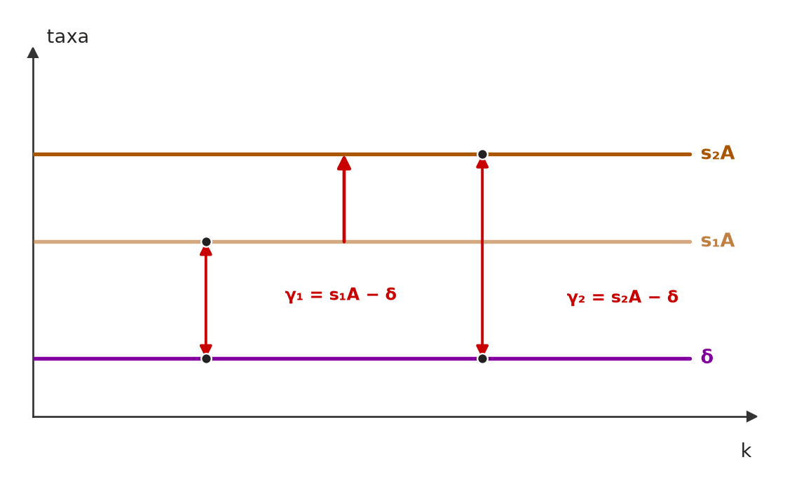

❌ [ME - FGV › Senado Federal/Consultor (Área XX)/2022 › Teorias do crescimento]Em relação ao modelo de crescimento de Harrod-Domar, analise as afirmativas a seguir. Questão: 1. O aumento do investimento agregado resulta em: (i) aumento da demanda pelo produto e (ii) aumento da capacidade da economia em elaborar o produto. 2. Existe o equilíbrio fio da navalha, em que se um país sai da trajetória de equilíbrio de longo prazo, ele não retorna mais a essa trajetória. 3. Se um país está em crescimento equilibrado, considerando uma taxa de poupança de 10% e produtividade média social potencial do capital igual a 20%, então as taxas de crescimento do investimento líquido e do produto devem ser iguais a 1%. Está correto o que se afirma em (A) 1, 2 e 3. (B) 1 e 2, apenas. (C) 1 e 3, apenas. (D) 2 e 3, apenas. (E) 2, apenas. | 🔵 Letra B ❌ (A) 1, 2 e 3. ✅ (B) 1 e 2, apenas. ❌ (C) 1 e 3, apenas. ❌ (D) 2 e 3, apenas. ❌ (E) 2, apenas. 🎯 Em poucas palavras: 1 e 2 descrevem o duplo papel do investimento e o fio da navalha. A 3 erra a conta: g = s·σ = 10% × 20% = 2%, não 1%. 📖 Destrinchando o tema:
🧐 Dissecando a redação do item: [dado alterado] A afirmativa falsa erra só o número (1% no lugar de 2%) e se esconde atrás do nome pomposo “produtividade média social potencial do capital”, que é apenas σ = 1/v. Quem não reconhece o termo de Domar tende a dividir (10%/20%… ou 20%/10%) em vez de multiplicar. 😈 Para dificultar:
|
[C/E - Clipping › Simuladão Março/2026 › Teorias do crescimento]Acerca dos modelos de crescimento econômico, julgue o item a seguir. Item: No modelo de Harrod-Domar, o crescimento econômico é determinado exclusivamente pela taxa de poupança e pelo coeficiente de capital necessário por unidade de produto, sendo que a produtividade marginal do capital é considerada constante e independente de tecnologia. | ✅ CERTO No modelo de Harrod-Domar, o crescimento econômico é determinado exclusivamente pela taxa de poupança e pelo coeficiente de capital necessário por unidade de produto, sendo que a produtividade marginal do capital é considerada constante e independente de tecnologia. 🎯 Em poucas palavras: No Harrod-Domar, g = s/v: só a poupança (s) e a relação capital-produto (v) determinam o crescimento. Com proporções fixas, o produto marginal do capital (1/v) é constante e não há progresso técnico no modelo. 📖 Destrinchando o tema:
🧐 Dissecando a redação do item: [literalidade · detalhe] O “exclusivamente” assusta, mas é exato: na equação fundamental só entram s e v. O ponto delicado é “independente de tecnologia”, que só se sustenta lido como “sem progresso técnico”: v é, ele mesmo, um dado técnico. 😈 Para dificultar:
|
[C/E - IDEG – Prof. Bozan › Pré-TPS/2026 › Teorias do crescimento]No contexto das teorias de crescimento endógeno e do impacto da tecnologia, julgue o item a seguir. Item: Uma das críticas ao modelo de Solow é que ele não considera a tecnologia como uma variável endógena, o que limita sua capacidade de explicar como mudanças tecnológicas afetam a produtividade de forma sustentada ao longo do tempo. | ✅ CERTO Uma das críticas ao modelo de Solow é que ele não considera a tecnologia como uma variável endógena, o que limita sua capacidade de explicar como mudanças tecnológicas afetam a produtividade de forma sustentada ao longo do tempo. 🎯 Em poucas palavras: No Solow, o progresso técnico é exógeno: cresce a uma taxa g dada. Como só ele sustenta o crescimento per capita no longo prazo, o modelo deixa sem explicação o próprio motor do crescimento. 📖 Destrinchando o tema:
🧐 Dissecando a redação do item: [literalidade] Crítica de manual, sem modulador perigoso. A variante ERRADA comum diz que Solow trata a tecnologia como endógena ou que, no Solow, a poupança determina o crescimento de longo prazo. 😈 Para dificultar:
|
[C/E - IDEG – Prof. Bozan › Pré-TPS/2026 › Teorias do crescimento]No contexto das teorias de crescimento endógeno e do impacto da tecnologia, julgue o item a seguir. Item: Nos modelos de crescimento endógeno, espera-se que o aumento do estoque de capital por trabalhador seja a principal forma de romper com os rendimentos decrescentes típicos das economias de escala. | ❌ ERRADO Nos modelos de crescimento endógeno, espera-se que o aumento do estoque de capital por trabalhador seja a principal forma de romper com os rendimentos decrescentes típicos das economias de escala. 🎯 Em poucas palavras: Acumular capital físico é justamente o que esbarra nos rendimentos decrescentes. Nos modelos endógenos, eles são rompidos por conhecimento — P&D, capital humano, transbordamentos. E “economias de escala” são rendimentos crescentes, não decrescentes. 📖 Destrinchando o tema:
🧐 Dissecando a redação do item: [troca de conceito · troca de conceito] Duas trocas: (1) o motor do crescimento endógeno (conhecimento) trocado pela acumulação de capital físico, que é o motor do Solow; (2) rendimentos decrescentes atribuídos a “economias de escala”, que significam o oposto. Basta uma para marcar ERRADO. 😈 Para dificultar:
✍️ Reescrita correta: Nos modelos de crescimento endógeno, espera-se que a acumulação de conhecimento — P&D, capital humano e transbordamentos — seja a principal forma de romper com os rendimentos decrescentes do capital. |
[C/E - IDEG – Prof. Bozan › Pré-TPS/2026 › Teorias do crescimento]No contexto das teorias de crescimento endógeno e do impacto da tecnologia, julgue o item a seguir. Item: A teoria do crescimento endógeno sugere que o investimento em tecnologia e conhecimento pode prolongar o crescimento econômico mesmo após o ponto de equilíbrio estacionário descrito nos modelos tradicionais. | ✅ CERTO A teoria do crescimento endógeno sugere que o investimento em tecnologia e conhecimento pode prolongar o crescimento econômico mesmo após o ponto de equilíbrio estacionário descrito nos modelos tradicionais. 🎯 Em poucas palavras: Nos modelos tradicionais (Solow sem progresso técnico), o crescimento per capita para no estado estacionário. Nos endógenos, investir em conhecimento — sem rendimentos decrescentes — mantém o crescimento indefinidamente. 📖 Destrinchando o tema:
🧐 Dissecando a redação do item: [paráfrase fiel · modulador relativo] Redação vaga (“ponto de equilíbrio estacionário descrito nos modelos tradicionais”), mas a ideia é correta e protegida por “pode”. Itens desse tipo erram quando dizem que os endógenos também levam a um estado estacionário sem crescimento. 😈 Para dificultar:
|
❌ [C/E - IDEG – Prof. Bozan › Pré-TPS/2026 › Teorias do crescimento]No contexto das teorias de crescimento endógeno e do impacto da tecnologia, julgue o item a seguir. Item: O conceito de destruição criativa, conforme discutido por Schumpeter, refere-se à substituição de antigas estruturas econômicas construídas por empreendedores por novas por meio de inovações oriundas de agentes focados em pesquisa e desenvolvimento, desempenhando um papel crucial no moderno progresso econômico baseado na disrupção. | ❌ ERRADO O conceito de destruição criativa, conforme discutido por Schumpeter, refere-se à substituição de antigas estruturas econômicas construídas por empreendedores por novas por meio de inovações oriundas de agentes focados em pesquisa e desenvolvimento, desempenhando um papel crucial no moderno progresso econômico baseado na disrupção. 🎯 Em poucas palavras: O item inverte os papéis: em Schumpeter o empreendedor é quem introduz a inovação e destrói o velho — não o construtor das estruturas antigas — e a inovação não se define por vir de “agentes de P&D”. 📖 Destrinchando o tema:
🧐 Dissecando a redação do item: [troca de ator · inversão] O item preserva o vocabulário certo (destruição criativa, inovação, disrupção) e embaralha os agentes: empurra o empreendedor para o lado do “antigo” e entrega a inovação a pesquisadores. Pista: em Schumpeter, quem destrói é sempre o empreendedor. 😈 Para dificultar:
✍️ Reescrita correta: O conceito de destruição criativa, conforme discutido por Schumpeter, refere-se à substituição de antigas estruturas econômicas |
[C/E - Nabuco › Teorias do crescimento]A respeito das teorias de crescimento econômico, julgue o item a seguir. Item: O modelo de Harrod-Domar postula uma relação de produto-capital fixa e conclui que a taxa de crescimento da economia é diretamente proporcional à taxa de poupança e inversamente proporcional à relação capital-produto. | ✅ CERTO O modelo de Harrod-Domar postula uma relação de produto-capital fixa e conclui que a taxa de crescimento da economia é diretamente proporcional à taxa de poupança e inversamente proporcional à relação capital-produto. 🎯 Em poucas palavras: É a equação fundamental g = s/v: s no numerador (diretamente proporcional), v = K/Y no denominador (inversamente). Produto-capital fixa ⇔ capital-produto fixa — uma é o inverso da outra. 📖 Destrinchando o tema:
🧐 Dissecando a redação do item: [literalidade · detalhe] Item de fórmula. A armadilha está na troca entre as duas relações (produto-capital × capital-produto): a banca inverte “diretamente” e “inversamente” ou troca a relação no denominador para pegar quem decorou sem entender. 😈 Para dificultar:
|
[C/E - Nabuco › Teorias do crescimento]Em relação aos modelos de crescimento, julgue o item a seguir. Item: Schumpeter cunhou a expressão “destruição criativa” para descrever o processo pelo qual inovações tecnológicas revolucionam a estrutura econômica, destruindo velhos setores e criando novos, sendo este um motor fundamental do capitalismo. | ✅ CERTO Schumpeter cunhou a expressão “destruição criativa” para descrever o processo pelo qual inovações tecnológicas revolucionam a estrutura econômica, destruindo velhos setores e criando novos, sendo este um motor fundamental do capitalismo. 🎯 Em poucas palavras: Definição correta da destruição criativa (ou criadora) de Schumpeter: inovações rompem a estrutura existente, eliminam setores e empresas antigos e criam novos — o motor do capitalismo. 📖 Destrinchando o tema:
🧐 Dissecando a redação do item: [literalidade] Definição de manual. A versão ERRADA mais comum troca o autor (Keynes, Marx), torna o processo exógeno ou nega o lado destrutivo (“sem eliminar empresas”). 😈 Para dificultar:
|
[C/E - Nabuco › Teorias do crescimento]Em relação aos modelos de crescimento, julgue o item a seguir. Item: Uma característica definidora dos modelos de crescimento endógeno é a incorporação da inovação tecnológica como uma variável determinada dentro do modelo, resultante de decisões econômicas de agentes que buscam lucro. | ✅ CERTO Uma característica definidora dos modelos de crescimento endógeno é a incorporação da inovação tecnológica como uma variável determinada dentro do modelo, resultante de decisões econômicas de agentes que buscam lucro. 🎯 Em poucas palavras: É a definição de crescimento endógeno: a inovação deixa de ser dada (como no Solow) e passa a resultar de escolhas — por exemplo, firmas que investem em P&D para obter o lucro de monopólio de uma patente. 📖 Destrinchando o tema:
🧐 Dissecando a redação do item: [literalidade] Definição correta; “que buscam lucro” é preciso para o modelo de Romer (1990) e para os schumpeterianos. Um ponto que a banca poderia explorar: nem todo modelo endógeno depende de lucro (Lucas trata de decisões de famílias), mas o item fala em “característica definidora” da inovação tecnológica, o que está certo. 😈 Para dificultar:
|
[C/E - Nidi/Jacqueline Bueno › Fevereiro/2026 › Teorias do crescimento]A respeito dos modelos de crescimento clássicos e modernos, julgue o item a seguir. Item: Os modelos de crescimento endógeno consideram o volume de poupança externa entrando no país como o promotor fundamental de seu crescimento. | ❌ ERRADO Os modelos de crescimento endógeno consideram o volume de poupança externa entrando no país como o promotor fundamental de seu crescimento. 🎯 Em poucas palavras: O motor dos modelos endógenos é interno: capital humano, conhecimento, P&D, aprendizado e transbordamentos. Esses modelos nem sequer distinguem poupança externa de interna. 📖 Destrinchando o tema:
🧐 Dissecando a redação do item: [troca de conceito] Troca o motor do crescimento endógeno por um conceito de outra literatura (poupança externa, dos modelos de hiato). Pista: nada em “endógeno” remete a fluxo vindo de fora do país. 😈 Para dificultar:
✍️ Reescrita correta: Os modelos de crescimento endógeno consideram a acumulação de capital humano e de conhecimento como o promotor fundamental de seu crescimento. |
[C/E - Nidi/Jacqueline Bueno › Fevereiro/2026 › Teorias do crescimento]A respeito dos modelos de crescimento clássicos e modernos, julgue o item a seguir. Item: Os modelos de crescimento endógeno consideram a explicação do processo de acumulação de capital humano e de conhecimento como parte do modelo. | ✅ CERTO Os modelos de crescimento endógeno consideram a explicação do processo de acumulação de capital humano e de conhecimento como parte do modelo. 🎯 Em poucas palavras: É o que os torna endógenos: a acumulação de qualificações e de ideias resulta de decisões dos agentes, modeladas explicitamente, e não de uma taxa dada de fora. 📖 Destrinchando o tema:
🧐 Dissecando a redação do item: [paráfrase fiel] Reescreve a definição de crescimento endógeno com vocabulário formal (“explicação… como parte do modelo” = endogeneização). Não há modulador nem troca de agente. 😈 Para dificultar:
|
[C/E - Clipping › Simuladão Julho/2025 › Teorias do crescimento]O crescimento de longo prazo depende da acumulação de fatores e da produtividade total. Com base nas teorias de crescimento, julgue o item a seguir. Item: A abordagem schumpeteriana do crescimento destaca o papel da destruição criadora, na qual novas tecnologias substituem processos ineficientes e impulsionam a inovação. | ✅ CERTO A abordagem schumpeteriana do crescimento destaca o papel da destruição criadora, na qual novas tecnologias substituem processos ineficientes e impulsionam a inovação. 🎯 Em poucas palavras: É o núcleo de Schumpeter: o capitalismo se transforma por destruição criadora — inovações introduzidas pelo empresário inovador tornam obsoletos produtos, métodos e empresas antigos, e é essa ruptura que move o desenvolvimento. 📖 Destrinchando o tema:
🧐 Dissecando a redação do item: [literalidade] Item de definição, sem modulador perigoso. Variações ERRADAS costumam trocar o agente (“o Estado”, “os trabalhadores”), dizer que a inovação vem de fora do sistema econômico ou atribuir o conceito a outro autor. 😈 Para dificultar:
|
[C/E - Clipping › Simuladão Julho/2025 › Teorias do crescimento]O crescimento de longo prazo depende da acumulação de fatores e da produtividade total. Com base nas teorias de crescimento, julgue o item a seguir. Item: O capital humano é irrelevante nos modelos de crescimento de inspiração clássica, pois considera-se que sua contribuição se limita à reprodução da força de trabalho. | ❌ ERRADO O capital humano é irrelevante nos modelos de crescimento de inspiração clássica, pois considera-se que sua contribuição se limita à reprodução da força de trabalho. 🎯 Em poucas palavras: Desde Adam Smith as habilidades adquiridas pelos trabalhadores contam como fonte de produtividade, e a teoria moderna fez do capital humano um motor central do crescimento. Nada de “irrelevante”. 📖 Destrinchando o tema:
🧐 Dissecando a redação do item: [modulador absoluto · nexo indevido] “Irrelevante” é absoluto, e a justificativa (“se limita à reprodução da força de trabalho”) mistura teoria do salário com teoria do crescimento. Em itens sobre fatores de crescimento, negar papel a um fator quase sempre é ERRADO. 😈 Para dificultar:
✍️ Reescrita correta: O capital humano é relevante nos modelos de crescimento de inspiração clássica, pois já Adam Smith contava as habilidades adquiridas dos trabalhadores como capital, fonte de maior produtividade. |
[C/E - Nidi/Jacqueline Bueno › Simulado 07/2023 › Teorias do crescimento]Julgue o item a seguir, relativo às teorias do crescimento econômico. Item: No modelo de crescimento econômico de Harrod-Domar, a taxa garantida de crescimento – ou seja, aquela que mantém o equilíbrio entre a taxa de poupança e investimento de longo prazo e garante que o estoque de capital disponível, em cada ponto do tempo, seja suficiente para produzir a quantidade de bens que as firmas desejam – é instável e, portanto, improvável que coincida com a taxa de crescimento natural. | ✅ CERTO No modelo de crescimento econômico de Harrod-Domar, a taxa garantida de crescimento – ou seja, aquela que mantém o equilíbrio entre a taxa de poupança e investimento de longo prazo e garante que o estoque de capital disponível, em cada ponto do tempo, seja suficiente para produzir a quantidade de bens que as firmas desejam – é instável e, portanto, improvável que coincida com a taxa de crescimento natural. 🎯 Em poucas palavras: Harrod distingue a taxa garantida (gw = s/v, que satisfaz os empresários) da taxa natural (gn = n + progresso técnico, que mantém o pleno emprego). Nada as iguala, e a garantida é um equilíbrio instável: o pleno emprego com crescimento equilibrado é obra do acaso. 📖 Destrinchando o tema:
🧐 Dissecando a redação do item: [literalidade · paráfrase fiel] O enunciado é longo, mas a definição de taxa garantida está correta, e os dois problemas de Harrod (instabilidade e coincidência improvável) aparecem juntos. O “portanto” liga as duas ideias de forma frouxa, mas não chega a criar um nexo falso: um equilíbrio instável também torna improvável o encontro com gn. 😈 Para dificultar:
|
[C/E - Nabuco › Pré-TPS/2023 › Teorias do crescimento]Sobre teorias do crescimento econômico, julgue o item a seguir. Item: O modelo de crescimento Harrod-Domar indica que qualquer desvio entre o investimento efetivo e o planejado faz com que a economia nunca mais retorne ao seu equilíbrio. | ✅ CERTO O modelo de crescimento Harrod-Domar indica que qualquer desvio entre o investimento efetivo e o planejado faz com que a economia nunca mais retorne ao seu equilíbrio. 🎯 Em poucas palavras: É o fio da navalha: quando o investimento efetivo difere do planejado (taxa efetiva ≠ taxa garantida), as reações dos empresários ampliam o desvio. Não há força que traga a economia de volta. 📖 Destrinchando o tema:
🧐 Dissecando a redação do item: [contraintuitivo · literalidade] “Qualquer” e “nunca mais” são absolutos que costumam sinalizar ERRADO, mas aqui descrevem com exatidão a instabilidade do fio da navalha. 🔥 Exceção clássica à regra dos moduladores: no Harrod-Domar, o absoluto é a própria tese. 😈 Para dificultar:
|
[C/E - Nabuco › Pré-TPS/2023 › Teorias do crescimento]Sobre teorias do crescimento econômico, julgue o item a seguir. Item: Com base nos modelos de crescimento endógeno, considerando uma função de produção dada por Y = AK, em que Y é o produto, K é o capital e A é um parâmetro fixo de produtividade, um aumento permanente na taxa de poupança aumenta permanentemente o nível de produto e, temporariamente, a taxa de crescimento do produto. | ❌ ERRADO Com base nos modelos de crescimento endógeno, considerando uma função de produção dada por Y = AK, em que Y é o produto, K é o capital e A é um parâmetro fixo de produtividade, um aumento permanente na taxa de poupança aumenta permanentemente o nível de produto e, temporariamente, a taxa de crescimento do produto. 🎯 Em poucas palavras: O item descreve o Solow. No modelo AK, γ = sA − δ: poupar mais eleva a taxa de crescimento permanentemente, porque o capital não tem rendimentos decrescentes. 📖 Destrinchando o tema:
📈 No gráfico:  No modelo AK, s·f(k)/k = sA não depende de k: a distância até δ é a taxa de crescimento, igual em qualquer k. Subir s de s₁ para s₂ afasta para sempre as duas retas — a taxa de crescimento sobe de γ₁ para γ₂ de forma permanente, e não só na transição. 🧐 Dissecando a redação do item: [troca de conceito · meia-verdade] O item enuncia o resultado do Solow e o atribui ao AK. A 1ª metade (nível permanentemente maior) é verdadeira nos dois modelos, o que dá falsa segurança. Pista: “Y = AK” elimina os rendimentos decrescentes, logo elimina a transição. 😈 Para dificultar:
✍️ Reescrita correta: Com base nos modelos de crescimento endógeno, considerando uma função de produção dada por Y = AK, em que Y é o produto, K é o capital e A é um parâmetro fixo de produtividade, um aumento permanente na taxa de poupança aumenta permanentemente o nível de produto e, permanentemente, a taxa de crescimento do produto. |
[C/E - Nabuco › Pré-TPS/2023 › Teorias do crescimento]Com base nas teorias do crescimento econômico, julgue o item seguinte. Item: Segundo a visão de Schumpeter sobre o processo de desenvolvimento econômico, a inovação desempenha um papel central nesse processo. A teoria schumpeteriana, em especial, enfatiza o lado da demanda e o papel inovador do consumidor. | ❌ ERRADO Segundo a visão de Schumpeter sobre o processo de desenvolvimento econômico, a inovação desempenha um papel central nesse processo. A teoria schumpeteriana, em especial, enfatiza o lado da demanda e o papel inovador do consumidor. 🎯 Em poucas palavras: Em Schumpeter, a inovação nasce do lado da oferta: quem inova é o empresário (empreendedor), e o consumidor é “educado” a desejar o novo. 📖 Destrinchando o tema:
🧐 Dissecando a redação do item: [meia-verdade · troca de ator] A 1ª frase é a tese correta (inovação central); o erro foi enxertado na 2ª, que troca o agente (consumidor no lugar do empresário) e o lado do mercado (demanda no lugar da oferta). O “em especial” dá ar de detalhe técnico ao que é inversão. 😈 Para dificultar:
✍️ Reescrita correta: Segundo a visão de Schumpeter sobre o processo de desenvolvimento econômico, a inovação desempenha um papel central nesse processo. A teoria schumpeteriana, em especial, enfatiza o lado da oferta e o papel inovador do empresário. |
[C/E - Nabuco › Pré-TPS/2023 › Teorias do crescimento]Com base nas teorias do crescimento econômico, julgue o item seguinte. Item: As modernas teorias do crescimento endógeno tentam explicar a taxa de progresso tecnológico, que o Modelo de Solow considera exógeno. | ✅ CERTO As modernas teorias do crescimento endógeno tentam explicar a taxa de progresso tecnológico, que o Modelo de Solow considera exógeno. 🎯 Em poucas palavras: É a definição do crescimento endógeno: trazer para dentro do modelo o progresso técnico que, em Solow, é um dado externo que “cai do céu”. 📖 Destrinchando o tema:
🧐 Dissecando a redação do item: [paráfrase fiel · modulador relativo] Reproduz a definição de manual; o “tentam explicar” é prudente e verdadeiro. A pegadinha possível estaria em inverter os papéis (Solow endógeno × modelos novos exógenos), o que não ocorre. 😈 Para dificultar:
|
[C/E - Nabuco › Pré-TPS/2023 › Teorias do crescimento]Com base nas teorias do crescimento econômico, julgue o item seguinte. Item: Contrariamente ao Modelo de Solow, EM ALGUNS MODELOS DE CRESCIMENTO ENDÓGENO, o capital, seja físico ou humano, apresenta retornos marginais constantes e não decrescentes. | ✅ CERTO Contrariamente ao Modelo de Solow, EM ALGUNS MODELOS DE CRESCIMENTO ENDÓGENO, o capital, seja físico ou humano, apresenta retornos marginais constantes e não decrescentes. 🎯 Em poucas palavras: No modelo AK (Y = AK) o produto marginal do capital é a constante A: sem rendimento decrescente, não há estado estacionário e o crescimento é perpétuo. O “em alguns” salva o item. 📖 Destrinchando o tema:
🧐 Dissecando a redação do item: [modulador relativo] O item é salvo pelo “em alguns”, que a própria fonte destacou em maiúsculas. 🔥 A versão sem o modulador (“nos modelos de crescimento endógeno, o capital apresenta retornos constantes”) é a armadilha clássica. 😈 Para dificultar:
|
❌ [C/E - Prof. Rodrigo Teixeira › Intensivo Pré-TPS/2023 › Teorias do crescimento]Acerca da relação entre poupança e investimento e dos modelos de crescimento econômico, julgue o item a seguir. Item: Nos modelos de crescimento endógeno, os investimentos em capital humano e pesquisa e desenvolvimento são fatores essenciais para explicar o crescimento de longo prazo da economia. | ✅ CERTO Nos modelos de crescimento endógeno, os investimentos em capital humano e pesquisa e desenvolvimento são fatores essenciais para explicar o crescimento de longo prazo da economia. 🎯 Em poucas palavras: Capital humano (Lucas) e P&D (Romer, Aghion-Howitt) são justamente os mecanismos que os modelos endógenos usam para escapar dos rendimentos decrescentes e explicar o crescimento contínuo. 📖 Destrinchando o tema:
🧐 Dissecando a redação do item: [paráfrase fiel] Reproduz o núcleo da teoria. O “essenciais” pode assustar como exagero, mas é exato: sem esses mecanismos (ou o AK), o modelo volta a ser Solow. Desconfie do adjetivo forte só quando ele contraria a teoria. 😈 Para dificultar:
|
[C/E - Prof. Rodrigo Teixeira › Intensivo Pré-TPS/2023 › Teorias do crescimento]Com relação aos modelos e teorias de crescimento e desenvolvimento econômico, julgue o item a seguir. Item: No modelo de Harrod-Domar, a taxa de crescimento da economia cresce com a taxa de poupança e o produto médio do capital. | ✅ CERTO No modelo de Harrod-Domar, a taxa de crescimento da economia cresce com a taxa de poupança e o produto médio do capital. 🎯 Em poucas palavras: Em Harrod-Domar, g = s/v, com v = K/Y. Como o produto médio do capital é Y/K = 1/v, g = s × (Y/K): sobe com a poupança e com o produto médio do capital. 📖 Destrinchando o tema:
🧐 Dissecando a redação do item: [paráfrase fiel · detalhe] A banca escreveu “produto médio do capital” em vez da forma usual “relação capital-produto”, que entra no denominador. Quem decorou g = s/v e não inverteu a razão marca ERRADO. 😈 Para dificultar:
|
❌ [C/E - Prof. Rodrigo Teixeira › Intensivo Pré-TPS/2023 › Teorias do crescimento]Com relação aos modelos e teorias de crescimento e desenvolvimento econômico, julgue o item a seguir. Item: Na teoria de Schumpeter, as inovações são fundamentais para se compreender o desenvolvimento econômico, ao contrário dos modelos de crescimento endógeno, que não levam em conta tais inovações. | ❌ ERRADO Na teoria de Schumpeter, as inovações são fundamentais para se compreender o desenvolvimento econômico, ao contrário dos modelos de crescimento endógeno, que não levam em conta tais inovações. 🎯 Em poucas palavras: A 1ª parte está certa; a 2ª inverte tudo: os modelos de crescimento endógeno existem justamente para explicar a inovação por dentro do modelo — alguns até formalizam a destruição criadora de Schumpeter. 📖 Destrinchando o tema:
🧐 Dissecando a redação do item: [meia-verdade · inversão] A 1ª oração (Schumpeter e inovação) é isca verdadeira; o “ao contrário” cria uma oposição falsa e atribui aos modelos endógenos a característica do modelo de Solow. Pista: “endógeno” quer dizer explicado dentro do modelo. 😈 Para dificultar:
✍️ Reescrita correta: Na teoria de Schumpeter, as inovações são fundamentais para se compreender o desenvolvimento econômico, assim como os modelos de crescimento endógeno, que também levam em conta tais inovações. |
❌ [C/E - Prof. Daniel (Telegram Economia CACD) › Teorias do crescimento]Julgue o item a seguir, relativo às teorias do crescimento econômico. Item: O modelo de Harrod-Domar conclui que uma economia não alcança o pleno emprego e taxas estáveis de crescimento naturalmente. | ✅ CERTO O modelo de Harrod-Domar conclui que uma economia não alcança o pleno emprego e taxas estáveis de crescimento naturalmente. 🎯 Em poucas palavras: Conclusão keynesiana de Harrod: não há mecanismo de mercado que leve a economia ao crescimento equilibrado com pleno emprego — a taxa garantida é instável e só por acaso coincide com a natural. 📖 Destrinchando o tema:
🧐 Dissecando a redação do item: [literalidade] Item curto, que cobra a conclusão política do modelo. O “naturalmente” (= por mecanismos de mercado) é a palavra-chave: o pleno emprego pode ocorrer, mas não é garantido. Trocar Harrod-Domar por Solow inverteria o gabarito. 😈 Para dificultar:
|
[C/E - Prof. Daniel (Telegram Economia CACD) › Teorias do crescimento]Julgue o item a seguir, relativo às teorias do crescimento econômico. Item: O Modelo Harrod-Domar de crescimento econômico apresenta uma grande simplicidade e, na medida em que dá primazia à acumulação de capital e não garante qualquer equilíbrio automático da economia através dos mecanismos de mercado. | ✅ CERTO O Modelo Harrod-Domar de crescimento econômico apresenta uma grande simplicidade e, na medida em que dá primazia à acumulação de capital e não garante qualquer equilíbrio automático da economia através dos mecanismos de mercado. 🎯 Em poucas palavras: As três características estão certas: modelo simples (g = s/v), centrado na acumulação de capital e sem mecanismo automático de equilíbrio (fio da navalha). 📖 Destrinchando o tema:
🧐 Dissecando a redação do item: [literalidade] Item descritivo, com redação truncada (“e, na medida em que dá… e não garante…” fica sem a oração principal), mas sem afirmação falsa. Atenção ao “qualquer”: aqui ele é exato, porque o modelo não tem mecanismo de mercado algum de volta ao equilíbrio. 😈 Para dificultar:
|
[C/E - Prof. Rodrigo Teixeira › Aula 8 - Macro › Teorias do crescimento]Com relação aos modelos de crescimento e desenvolvimento, julgue o item a seguir. Item: No modelo de Harrod-Domar, a taxa de crescimento do produto é um equilíbrio estável, isto é, uma vez fora do equilíbrio, a economia tem mecanismos que a conduzem naturalmente de volta à trajetória de crescimento equilibrado. | ❌ ERRADO No modelo de Harrod-Domar, a taxa de crescimento do produto é um equilíbrio estável, isto é, uma vez fora do equilíbrio, a economia tem mecanismos que a conduzem naturalmente de volta à trajetória de crescimento equilibrado. 🎯 Em poucas palavras: É o contrário: no Harrod-Domar o crescimento equilibrado é instável — o fio da navalha. Quem tem equilíbrio estável, com retorno automático, é o modelo de Solow. 📖 Destrinchando o tema:
🧐 Dissecando a redação do item: [troca de ator · inversão] O item cola a propriedade do Solow (estabilidade) no Harrod-Domar. A explicação depois do “isto é” é coerente com o “estável”, o que dá falsa segurança: o erro está na premissa, não na definição. 🔥 Cobrança recorrente: fio da navalha × convergência. 😈 Para dificultar:
✍️ Reescrita correta: No modelo de Harrod-Domar, a taxa de crescimento do produto é um equilíbrio instável, isto é, uma vez fora do equilíbrio, a economia não tem mecanismos que a conduzam naturalmente de volta à trajetória de crescimento equilibrado. |
[C/E - Prof. Rodrigo Teixeira › Aula 8 - Macro › Teorias do crescimento]Com relação aos modelos de crescimento e desenvolvimento, julgue o item a seguir. Item: A teoria do desenvolvimento de Schumpeter rejeita a noção do fluxo circular da renda, introduzindo o papel das inovações tecnológicas, e também rejeita a noção da neutralidade monetária, tendo o crédito e a capacidade de criação de poder de compra pelo sistema bancário um papel fundamental no desenvolvimento econômico. | ✅ CERTO A teoria do desenvolvimento de Schumpeter rejeita a noção do fluxo circular da renda, introduzindo o papel das inovações tecnológicas, e também rejeita a noção da neutralidade monetária, tendo o crédito e a capacidade de criação de poder de compra pelo sistema bancário um papel fundamental no desenvolvimento econômico. 🎯 Em poucas palavras: Em Schumpeter, o desenvolvimento é a ruptura do fluxo circular pelas inovações, e a moeda não é neutra: o crédito bancário cria o poder de compra com que o empresário inovador retira recursos dos usos antigos. 📖 Destrinchando o tema:
🧐 Dissecando a redação do item: [literalidade · detalhe] Item longo, com duas “rejeições” verdadeiras. O “rejeita o fluxo circular” é uma simplificação aceita pela banca: Schumpeter não nega o fluxo circular como descrição da economia estacionária, mas o rejeita como explicação do desenvolvimento. A pegadinha provável seria afirmar a neutralidade da moeda. 😈 Para dificultar:
|
[C/E - Prof. Rodrigo Teixeira › Aula 8 - Macro › Teorias do crescimento]Com relação aos modelos de crescimento e desenvolvimento, julgue o item a seguir. Item: O processo de destruição criadora de Schumpeter é caracterizado pelo impacto das inovações no sistema econômico, que embora sejam responsáveis pela dinâmica do desenvolvimento, podem destruir empresas velhas e modelos de negócios ultrapassados, criando falências e desemprego. | ✅ CERTO O processo de destruição criadora de Schumpeter é caracterizado pelo impacto das inovações no sistema econômico, que embora sejam responsáveis pela dinâmica do desenvolvimento, podem destruir empresas velhas e modelos de negócios ultrapassados, criando falências e desemprego. 🎯 Em poucas palavras: A destruição criadora tem dois lados inseparáveis: a inovação gera desenvolvimento e, ao mesmo tempo, destrói empresas, setores e empregos ligados às técnicas antigas. 📖 Destrinchando o tema:
🧐 Dissecando a redação do item: [literalidade · modulador relativo] Definição correta, protegida por “podem destruir”. O candidato pode estranhar a menção a falências e desemprego num conceito “positivo”, mas a destruição é metade do processo. Variante ERRADA comum: dizer que a destruição criadora não afeta o emprego ou que só ocorre em crises externas. 😈 Para dificultar:
|
[C/E - Nabuco › Teorias do crescimento]A respeito dos modelos de crescimento e da economia intertemporal, julgue o item a seguir. Item: O modelo de Solow apresenta uma contradição básica, conhecida como equilíbrio em fio de navalha: se um país sair da trajetória de equilíbrio a longo prazo, ele não consegue voltar mais para a trajetória do crescimento equilibrado. | ❌ ERRADO O modelo de Solow apresenta uma contradição básica, conhecida como equilíbrio em fio de navalha: se um país sair da trajetória de equilíbrio a longo prazo, ele não consegue voltar mais para a trajetória do crescimento equilibrado. 🎯 Em poucas palavras: O fio da navalha é do Harrod-Domar. O Solow foi criado justamente para superá-lo: com substituição entre fatores e rendimentos decrescentes, a economia converge para o estado estacionário. 📖 Destrinchando o tema:
🧐 Dissecando a redação do item: [troca de ator] A descrição do fio da navalha está perfeita; só o modelo foi trocado. 🔥 Clássico de prova: a banca copia a definição de um modelo e cola o nome do outro. Pista: “contradição básica” e “não consegue voltar” nunca descrevem o Solow. 😈 Para dificultar:
✍️ Reescrita correta: O modelo de Harrod-Domar apresenta uma contradição básica, conhecida como equilíbrio em fio de navalha: se um país sair da trajetória de equilíbrio a longo prazo, ele não consegue voltar mais para a trajetória do crescimento equilibrado. |
[C/E - Nabuco › Teorias do crescimento]A respeito dos modelos de crescimento e da economia intertemporal, julgue o item a seguir. Item: Se há retornos marginais constantes dos fatores de produção que podem ser acumulados, os modelos de crescimento endógenos preveem que a taxa de crescimento de longo-prazo seja influenciada pela taxa de acumulação desses fatores. No caso do modelo básico Y = AK, a taxa de crescimento de longo-prazo é influenciada pela taxa de poupança. | ✅ CERTO Se há retornos marginais constantes dos fatores de produção que podem ser acumulados, os modelos de crescimento endógenos preveem que a taxa de crescimento de longo-prazo seja influenciada pela taxa de acumulação desses fatores. No caso do modelo básico Y = AK, a taxa de crescimento de longo-prazo é influenciada pela taxa de poupança. 🎯 Em poucas palavras: Sem rendimentos decrescentes, poupar mais não “se esgota”: no modelo AK, γ = sA − δ — a taxa de poupança afeta a taxa de crescimento de longo prazo, e não só o nível. 📖 Destrinchando o tema:
🧐 Dissecando a redação do item: [literalidade · detalhe] Condicional bem construída: “se há retornos marginais constantes” é exatamente a hipótese que gera crescimento endógeno. A armadilha seria trocar por “decrescentes” (aí o item viraria ERRADO) ou afirmar que no AK a poupança só afeta o nível. 😈 Para dificultar:
|
[C/E - Nabuco › Teorias do crescimento]Com relação às teorias do crescimento econômico, julgue o item a seguir. Item: De acordo com os modelos de crescimento endógeno, algumas explicações para o diferencial de renda per capita podem ser encontradas em variáveis como capital humano e investimento em pesquisa e desenvolvimento. | ✅ CERTO De acordo com os modelos de crescimento endógeno, algumas explicações para o diferencial de renda per capita podem ser encontradas em variáveis como capital humano e investimento em pesquisa e desenvolvimento. 🎯 Em poucas palavras: Nos modelos endógenos, capital humano (Lucas) e P&D (Romer) determinam a taxa de crescimento; países que investem diferente neles crescem a taxas diferentes, e as rendas per capita divergem. 📖 Destrinchando o tema:
🧐 Dissecando a redação do item: [modulador relativo · literalidade] “Algumas” e “podem” protegem o item; as variáveis citadas são as clássicas dos modelos de Lucas e Romer. Viraria ERRADO com “exclusivamente” ou com variáveis exógenas no lugar. 😈 Para dificultar:
|
[C/E - Banca não identificada › Teorias do crescimento]Julgue o item a seguir, relativo às teorias do crescimento econômico. Item: Schumpeter cunhou a expressão “destruição criadora” para descrever o processo pelo qual as inovações revolucionam a estrutura econômica a partir de dentro, destruindo incessantemente o antigo e criando elementos novos. Esse processo de destruição criadora é básico para se entender o capitalismo. | ✅ CERTO Schumpeter cunhou a expressão “destruição criadora” para descrever o processo pelo qual as inovações revolucionam a estrutura econômica a partir de dentro, destruindo incessantemente o antigo e criando elementos novos. Esse processo de destruição criadora é básico para se entender o capitalismo. 🎯 Em poucas palavras: O item parafraseia Schumpeter em Capitalismo, Socialismo e Democracia (1942): a mutação industrial que revoluciona a estrutura econômica “de dentro”, destruindo o velho e criando o novo, é o fato essencial do capitalismo. 📖 Destrinchando o tema:
🧐 Dissecando a redação do item: [literalidade · paráfrase fiel] Reprodução quase literal do capítulo 7 de Capitalismo, Socialismo e Democracia. A armadilha possível seria trocar “de dentro” por “de fora” ou dizer que o processo leva ao equilíbrio estacionário. 😈 Para dificultar:
|
[C/E - Banca não identificada › Teorias do crescimento]Julgue o item a seguir, relativo às teorias do crescimento econômico. Item: No modelo de Harrod-Domar, o produto de uma economia é função do estoque de capital, e a taxa de crescimento de longo prazo é determinada pela produtividade total dos fatores. | ❌ ERRADO No modelo de Harrod-Domar, o produto de uma economia é função do estoque de capital, e a taxa de crescimento de longo prazo é determinada pela produtividade total dos fatores. 🎯 Em poucas palavras: A 1ª parte está certa (Y = K/v). O erro é a 2ª: no Harrod-Domar, g = s/v — poupança e relação capital-produto. Produtividade total dos fatores é conceito neoclássico (resíduo de Solow). 📖 Destrinchando o tema:
🧐 Dissecando a redação do item: [troca de conceito · anacronismo] Primeira oração verdadeira para ganhar confiança; na segunda, o determinante do crescimento neoclássico (PTF) é transplantado para o modelo keynesiano. Pista: Harrod-Domar não tem progresso técnico — qualquer menção a tecnologia ou PTF como motor do modelo é suspeita. 😈 Para dificultar:
✍️ Reescrita correta: No modelo de Harrod-Domar, o produto de uma economia é função do estoque de capital, e a taxa de crescimento de longo prazo é determinada pela taxa de poupança e pela relação capital-produto (g = s/v). |
[C/E - Banca não identificada › Teorias do crescimento]Julgue o item a seguir, relativo às teorias do crescimento econômico. Item: Uma característica definidora dos modelos de crescimento endógeno mais recentes é a incorporação da inovação tecnológica como variável interna, decorrente das decisões dos agentes econômicos. | ✅ CERTO Uma característica definidora dos modelos de crescimento endógeno mais recentes é a incorporação da inovação tecnológica como variável interna, decorrente das decisões dos agentes econômicos. 🎯 Em poucas palavras: É a definição de crescimento endógeno: o progresso técnico, exógeno no Solow, passa a ser explicado dentro do modelo, como resultado de escolhas de firmas e pessoas (P&D, educação, aprendizado). 📖 Destrinchando o tema:
🧐 Dissecando a redação do item: [literalidade] Definição de manual. As versões ERRADAS que a banca usa: “tecnologia exógena” nos modelos endógenos, “rendimentos decrescentes do capital” como marca do modelo AK ou a atribuição da endogeneização a Solow. 😈 Para dificultar:
|